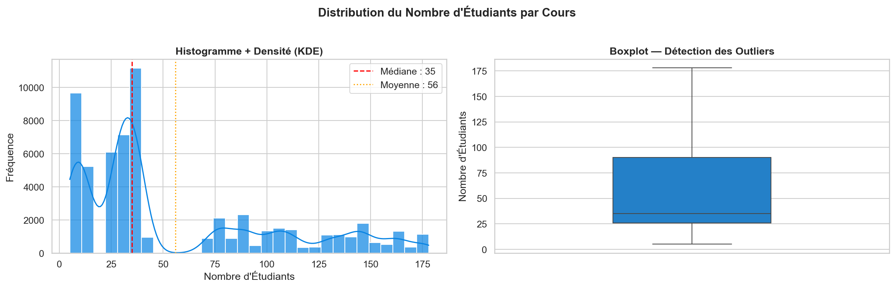
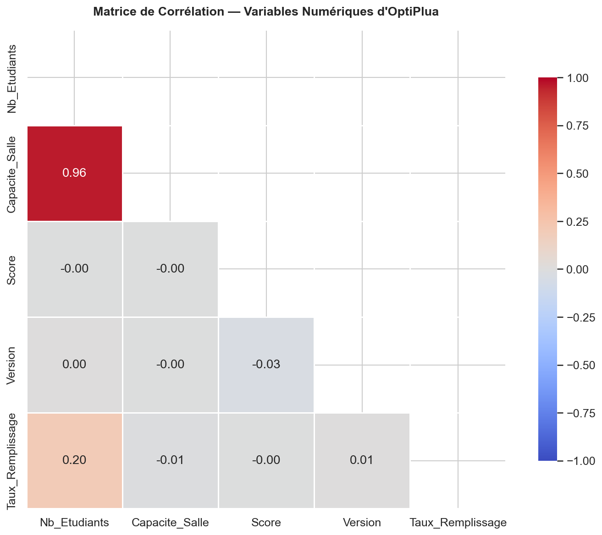
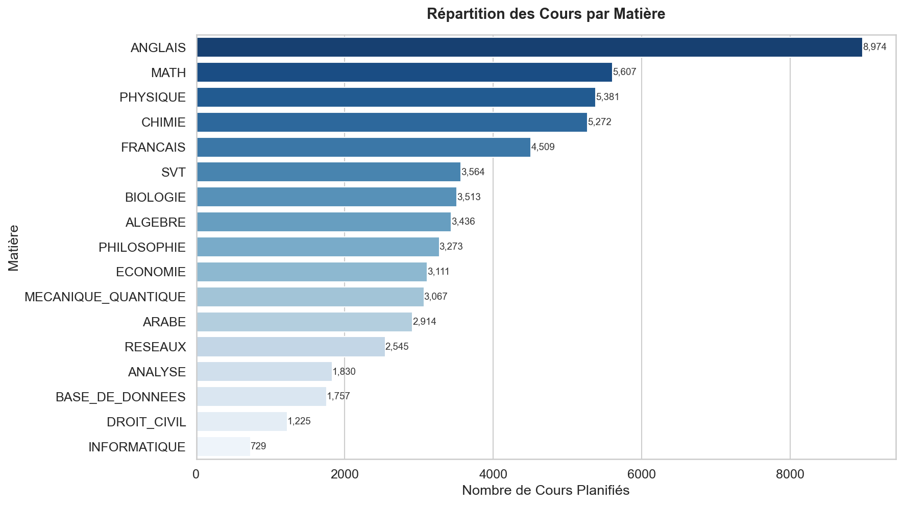
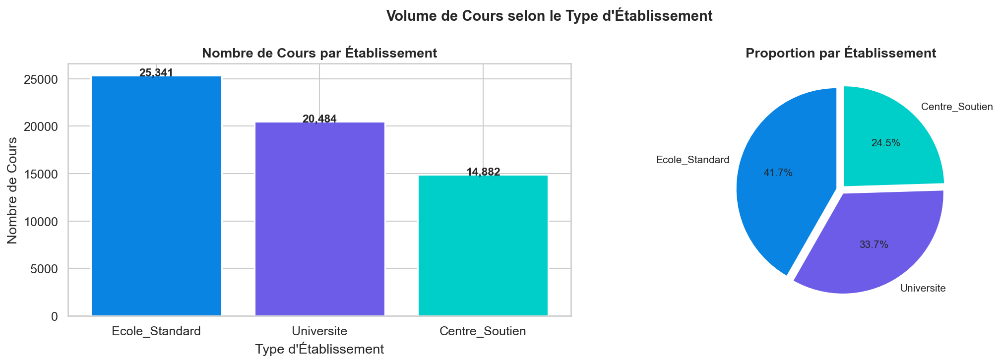
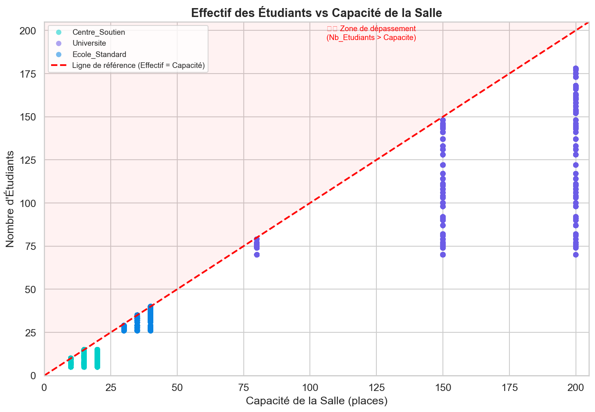
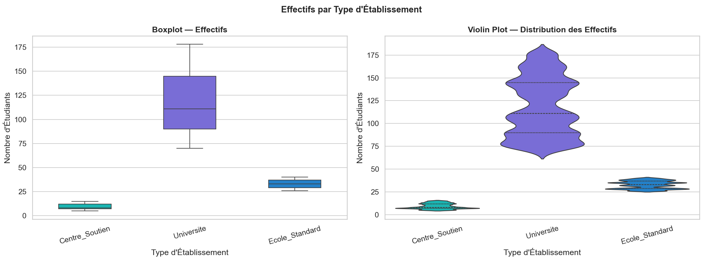
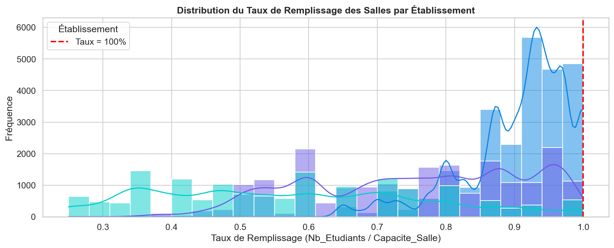
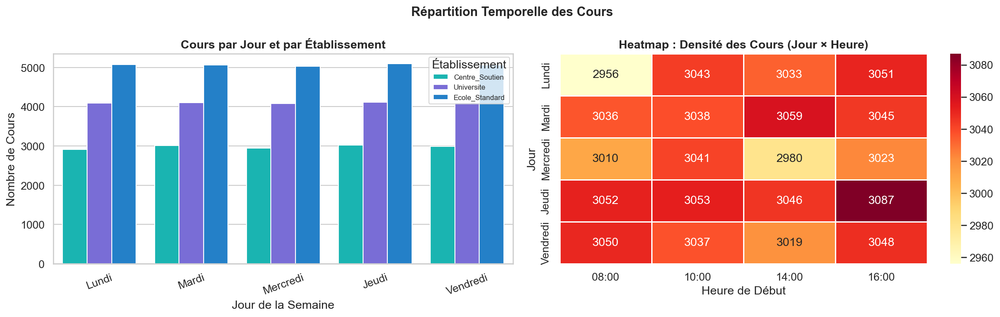
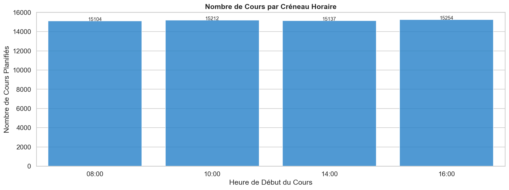

Une plateforme qui combine un moteur heuristique de contraintes et un modele de Machine Learning (XGBoost) pour generer, evaluer et classer automatiquement les emplois du temps des etablissements educatifs marocains.
La construction d'un emploi du temps scolaire est un probleme d'optimisation combinatoire de classe NP-difficile : le nombre de combinaisons possibles explose des que le nombre d'enseignants, de salles et de classes augmente. Il devient impossible de toutes les explorer pour trouver la solution parfaite.
OptiPlua propose une approche en deux temps. D'abord, un moteur heuristique genere rapidement plusieurs emplois du temps valides en respectant 7 contraintes dures (anti-collisions, disponibilites, quotas horaires...). Ensuite, un systeme de scoring — mathematique puis enrichi par un modele XGBoost entraine sur 182 000 seances — evalue la qualite de chaque solution et classe les meilleures.
Le tout est accessible via un tableau de bord interactif (Streamlit) permettant a un administrateur de saisir ses donnees, lancer l'optimisation, visualiser les meilleurs emplois du temps sous forme de grilles colorees et les telecharger.
Pourquoi avons-nous besoin d'un systeme intelligent pour faire ce qu'un humain fait chaque annee a la main ? Parce que ce travail manuel prend des semaines, genere des erreurs, et ne garantit jamais d'avoir trouve la meilleure organisation possible.
En informatique theorique, la planification d'emplois du temps appartient a la classe des problemes NP-difficiles. Concretement, cela signifie qu'aucun algorithme connu ne peut garantir la solution optimale en un temps raisonnable quand la taille du probleme grandit.
Pour un etablissement avec 50 enseignants, 30 salles, 40 classes et 20 creneaux hebdomadaires, le nombre de combinaisons depasse de tres loin ce qu'un ordinateur peut tester une par une.
Tester toutes les combinaisons prendrait des milliers d'annees, meme sur un superordinateur. Notre choix de conception est donc de renoncer a l'optimum absolu pour viser une solution tres satisfaisante, obtenue en quelques secondes. C'est le principe meme des heuristiques : echanger une garantie theorique contre une efficacite pratique.
Chaque systeme educatif a ses specificites. Au Maroc, les centres de soutien fonctionnent le soir (19h-22h), les universites ont des amphitheatres et des creneaux longs, et les ecoles suivent des horaires standards. Nous avons modelise ces trois realites pour que l'outil soit directement utilisable sur le terrain.
Le projet a ete construit en 4 phases successives, chacune produisant un livrable reutilise par la suivante. Cette organisation suit les bonnes pratiques de la Data Science : on ne passe pas au Machine Learning avant d'avoir des donnees propres et bien comprises.
Faute de donnees reelles d'etablissements, nous avons genere des donnees synthetiques realistes (enseignants, salles, matieres, classes) via un notebook Jupyter. Elles servent de matiere premiere a tout le reste.
Le moteur heuristique transforme ces donnees en emplois du temps valides. Une analyse exploratoire (EDA) verifie ensuite la coherence des donnees generees a travers 9 visualisations statistiques.
On definit une formule de score mesurant la qualite d'un emploi du temps, puis on entraine un modele XGBoost a predire ce score. Une boucle de feedback humain permet d'ameliorer le modele avec le temps.
Toute cette logique est rendue accessible via une application web Streamlit : authentification, saisie des donnees, generation, et visualisation interactive des resultats.
Tout projet de Machine Learning commence par les donnees. N'ayant pas acces aux donnees reelles
(confidentielles) des etablissements, nous avons genere nous-memes des donnees synthetiques
realistes via le notebook data_generator.ipynb.
Trois raisons : (1) les donnees reelles d'ecoles sont protegees et difficiles a obtenir ; (2) generer nous-memes les donnees nous permet de controler leur structure et de couvrir tous les cas (primaire, lycee, universite...) ; (3) on peut produire un grand volume necessaire pour entrainer un modele de Machine Learning, ce qui serait impossible avec quelques ecoles reelles.
Le systeme repose sur 4 fichiers CSV, chacun decrivant un element du probleme :
| Fichier | Entite | Colonnes principales | Role |
|---|---|---|---|
enseignants_data.csv |
Enseignants | Matieres, Niveaux_Autorises, Heures_Max_Par_Semaine, Creneaux_Indisponibles | Qui peut enseigner quoi, a quels niveaux, et quand |
salles_data.csv |
Salles | Capacite, Type_Salle (Generale, Labo, Amphi) | Ou les cours peuvent avoir lieu |
matieres_data.csv |
Matieres | Nom_Matiere, Heures_Hebdo_Requises, Necessite_Labo | Quoi enseigner et combien d'heures |
classes_data.csv |
Classes | Niveau, Nombre_Etudiants | A qui s'adressent les cours |
Un vrai enseignant n'est pas une machine disponible 24h/24. Nous avons ajoute ces attributs pour rendre la simulation realiste : certains profs ne peuvent pas le lundi matin, d'autres ont un quota horaire limite. Ces contraintes individuelles rendent le probleme plus difficile — donc plus proche de la realite.
Le coeur du systeme. Le fichier simulator.py (413 lignes) prend les 4 entites en entree
et produit des emplois du temps complets et valides. Voici comment il fonctionne.
Plutot que de tester toutes les combinaisons (impossible), le moteur procede par essais-erreurs intelligents. Pour chaque seance a placer, il tire au hasard un creneau, un professeur compatible et une salle libre, puis verifie si ce choix respecte les contraintes. Si oui, il valide ; sinon, il reessaie — jusqu'a 300 fois.
Le processus est repete N fois (typiquement 10) avec des graines aleatoires differentes. Resultat : N emplois du temps tous valides, mais de qualites variables. C'est cette diversite qui permet ensuite de choisir le meilleur. Chaque variante est ainsi un "candidat" en competition.
300 tentatives est un compromis : assez pour resoudre la plupart des conflits, sans bloquer le programme indefiniment sur un cas impossible. Plusieurs graines aleatoires garantissent que chaque variante explore une region differente de l'espace des solutions — sinon on obtiendrait 10 fois le meme emploi du temps.
def verifier_contraintes(id_prof, id_salle, id_classe, creneau,
heures_prof, indispo_prof, max_heures_prof,
occupations_prof, occupations_salle, occupations_classe,
max_consecutives=0):
# C1 : Le prof est-il deja occupe a ce creneau ?
if creneau in occupations_prof.get(id_prof, set()):
return False, 'C1_prof_occupe'
# C2 : La salle est-elle deja prise ?
if creneau in occupations_salle.get(id_salle, set()):
return False, 'C2_salle_occupee'
# C3 : La classe a-t-elle deja un cours ?
if creneau in occupations_classe.get(id_classe, set()):
return False, 'C3_classe_occupee'
# C4 : Le prof est-il indisponible ?
if creneau in indispo_prof:
return False, 'C4_indispo'
# C5 : Quota hebdomadaire depasse ?
if heures_prof.get(id_prof, 0) >= max_heures_prof:
return False, 'C5_max_heures'
# C8 : Trop d'heures consecutives ? / C9 : Plus de 8h dans la journee ?
# ... (verifications supplementaires)
return True, '' # Toutes les contraintes sont satisfaitesCette fonction est appelee a chaque tentative de placement. Elle verifie les contraintes une par une et s'arrete des qu'une seule echoue (renvoyant le code de la regle violee, utile pour le debug).
Detail technique important : les occupations sont stockees dans des ensembles Python (sets). Verifier si un creneau est deja pris se fait alors en temps constant O(1) — instantane, meme avec des milliers de creneaux. C'est ce qui rend le moteur rapide.
while not assigne and tentatives < max_retries:
tentatives += 1
creneau = random.choice(creneaux_type) # Creneau au hasard
prof = random.choice(profs_compat) # Prof compatible au hasard
salle = random.choice(salles_compat) # Salle adaptee au hasard
valide, raison = verifier_contraintes(...) # On teste les 7 regles
if valide:
# On reserve le creneau pour le prof, la salle et la classe
occupations_prof[id_prof].add(creneau)
occupations_salle[id_salle].add(creneau)
occupations_classe[id_classe].add(creneau)
heures_prof[id_prof] += _get_slot_duration(creneau)
emploi.append({...}) # On enregistre la seance
assigne = True
else:
stats_raison[raison] += 1 # On compte les echecs par type
La boucle tente de placer une seance jusqu'a reussir ou epuiser les max_retries essais.
Quand un placement reussit, le creneau est immediatement reserve dans les trois
dictionnaires d'occupation, ce qui empeche tout conflit futur. Les echecs sont comptabilises par
raison — une information precieuse pour comprendre pourquoi un emploi du temps est difficile a construire.
Un emploi du temps n'est valide que s'il respecte toutes les contraintes dures. Une contrainte "dure" est non-negociable : la violer rend l'emploi du temps inutilisable (deux cours dans la meme salle au meme moment, par exemple). Voici les 7 regles que nous verifions.
| ID | Contrainte | Definition | Explication simple (pour tous) |
|---|---|---|---|
| C1 | Anti-collision Enseignant | Un enseignant ne peut avoir 2 cours au meme creneau | Un prof ne peut pas etre dans deux classes en meme temps |
| C2 | Anti-collision Salle | Une salle n'accueille qu'une classe a la fois | Pas deux groupes dans la meme piece au meme moment |
| C3 | Anti-collision Classe | Une classe ne peut suivre 2 cours simultanes | Les eleves ne suivent qu'un seul cours a la fois |
| C4 | Indisponibilite | Respecter les creneaux indisponibles de chaque prof | Si un prof dit "pas le lundi matin", on respecte |
| C5 | Volume horaire max | Ne pas depasser le quota hebdomadaire d'un prof | Un prof a 18h/semaine ? On ne lui en donne pas 20 |
| C6 | Adequation Laboratoire | Une matiere a labo va dans une salle de type labo | La chimie se fait dans un labo, pas une salle normale |
| C7 | Capacite de la salle | La salle doit pouvoir accueillir tous les eleves | 30 eleves ne tiennent pas dans une salle de 20 places |
Au-dela des collisions, un bon emploi du temps respecte le confort humain. C8 limite les heures consecutives (pas 8h de cours d'affilee) et C9 plafonne la charge journaliere a 8h. Ces regles evitent l'epuisement des enseignants.
Les contraintes dures (C1-C9) doivent etre respectees absolument. Les preferences "souples" (eviter les trous, bien remplir les salles) ne bloquent pas la generation mais sont penalisees dans le score. C'est la prochaine section.
Avant de construire un modele de Machine Learning, il faut comprendre ses donnees.
L'analyse exploratoire (EDA, Exploratory Data Analysis) consiste a visualiser les donnees
sous toutes les coutures pour reperer les tendances, les anomalies et les correlations.
Le notebook exploration.ipynb a produit 9 visualisations.
Un modele ML n'est jamais meilleur que ses donnees. L'EDA permet de verifier la qualite des donnees generees (sont-elles realistes ?), de detecter les anomalies (valeurs aberrantes) et d'identifier les variables importantes (lesquelles influencent le score ?). C'est une etape de controle qualite indispensable.









Un emploi du temps sans conflit n'est pas forcement bon. S'il y a 4 heures de trou entre deux cours d'un prof, ou si une salle de 200 places accueille 10 eleves, c'est du gaspillage. Le score capture ces nuances en attribuant une note de 0 a 100.
max(0, ...) empeche un score negatif.
On normalise la penalite par la taille de l'emploi du temps. Sinon, un grand etablissement (1000 seances) aurait toujours un mauvais score par rapport a une petite ecole (50 seances), simplement parce qu'il a plus de seances. Le facteur 5 represente "5 points de penalite tolerables par seance en moyenne" : un seuil au-dela duquel le score s'effondre.
Pour chaque heure de "trou" dans la journee d'un prof (ex : cours a 8h puis a 14h = 4h de trou), on retire 2 points par heure. Pourquoi ? Les profs detestent attendre entre deux cours.
Meme principe pour les eleves, mais penalite plus forte (2.5). Pourquoi plus forte ? Un trou est plus penible pour un groupe d'eleves (souvent mineurs, sans endroit ou aller) que pour un adulte.
Si une classe a plus de 4 seances dans la meme journee, on retire 1 point. Pourquoi ? Trop de cours le meme jour fatigue les eleves et nuit a l'apprentissage.
Si le taux de remplissage (eleves / capacite) est inferieur a 40%, on retire 1.5 point. Pourquoi ? Mettre 10 eleves dans un amphi de 200 places gaspille les ressources.
def calculer_score_emploi(df_emploi):
total_seances = len(df_emploi)
# 1. Trous enseignants : -2 pts par heure de gap
penalite_trous_profs = 0
for (id_prof, jour), group in df_temp.groupby(['ID_Enseignant', 'Jour']):
slots = group.sort_values('H_Debut_Int').to_dict('records')
for i in range(len(slots) - 1):
gap = slots[i+1]['H_Debut_Int'] - slots[i]['H_Fin_Int']
if gap > 0:
penalite_trous_profs += gap * 2
# 2. Trous classes : meme logique, coefficient 2.5
# 3. Surcharge : -1 pt si classe a > 4 seances/jour
nb_surcharges = (seances_par_classe_jour > 4).sum()
# 4. Sous-utilisation : -1.5 pt si remplissage < 40%
nb_sous_util = (df_temp['Taux_Remplissage'] < 0.4).sum()
# Score final normalise
penalite_totale = (penalite_trous_profs + penalite_trous_classes
+ penalite_surcharge + penalite_salles)
max_penalite = total_seances * 5.0
score = max(0, 100 * (1 - penalite_totale / max_penalite))
return round(score, 2), detailsL'outil cle ici est le groupby de Pandas : on regroupe les seances par (enseignant, jour), on les trie par heure, puis on mesure les ecarts entre seances consecutives. Cette operation vectorisee est tres efficace, meme sur des milliers de lignes.
Le scoring heuristique est rapide mais "fige" : ses regles sont ecrites a la main. Le Machine Learning apprend, lui, directement des donnees. Notre modele XGBoost apprend a predire le score de qualite d'une seance a partir de ses caracteristiques.
Le script src/bootstrap_data.py genere 150 versions d'emplois du temps,
chacune notee par une fonction de scoring enrichie, produisant un dataset de 182 000 seances
avec leur score (bootstrap_schedules.csv).
Un modele ML a besoin de beaucoup d'exemples varies pour apprendre. En generant 150 emplois du temps de qualites differentes (du tres bon au mediocre), on cree un jeu de donnees riche ou le modele peut apprendre ce qui distingue une bonne seance d'une mauvaise. Le terme "bootstrap" signifie qu'on amorce le systeme avec des donnees auto-generees, faute de donnees reelles annotees.
Le modele ne comprend pas "Lundi" ou "MATH". Il faut transformer ces donnees brutes en
nombres significatifs. C'est le role de models/feature_engineering.py.
| Feature creee | Calcul & sens |
|---|---|
H_Start | Heure de debut en entier ("08:00" → 8) |
Est_Matin | 1 si le cours est avant 12h, 0 sinon |
Taux_Remplissage | Nb_Etudiants / Capacite_Salle |
Pression_Planif | log(1 + Nb_Tentatives) — difficulte de placement |
Teacher_Day_Gap | Total des heures de trous du prof ce jour |
Room_Avg_Util | Utilisation moyenne de la salle sur la semaine |
LabelEncoder convertit les categories en nombres (Lundi=0, Mardi=1...). MinMaxScaler ramene toutes les valeurs entre 0 et 1, pour qu'aucune variable (comme la capacite, qui peut valoir 200) n'ecrase les autres par son echelle.
def preprocess_data(df, is_training=True):
# 1. Features temporelles
df['H_Start'] = df['Heure_Debut'].apply(lambda x: int(x.split(':')[0]))
df['Est_Matin'] = (df['H_Start'] < 12).astype(int)
# 2. Features logistiques
df['Taux_Remplissage'] = df['Nb_Etudiants'] / df['Capacite_Salle']
df['Pression_Planif'] = np.log1p(df['Nb_Tentatives'])
# 3. Features agregees (signaux de qualite)
df['Room_Avg_Util'] = df.groupby('ID_Salle')['Taux_Remplissage'].transform('mean')
# 4. Encodage + normalisation
if is_training:
for col in COLS_CATEGORIQUES:
le = LabelEncoder(); df[col] = le.fit_transform(df[col])
scaler = MinMaxScaler(); df[num_cols] = scaler.fit_transform(df[num_cols])
joblib.dump(artefacts, ARTEFACTS_PATH) # Sauvegarde pour l'inference
else:
artefacts = joblib.load(ARTEFACTS_PATH) # Reutilise les memes encodeurs
return X, y, weights
Point crucial : en entrainement (is_training=True), on cree et sauvegarde
les encodeurs. En inference, on recharge exactement les memes. Sans cela, "Lundi"
pourrait etre encode 0 a l'entrainement et 3 a la prediction — le modele ne comprendrait plus rien.
XGBoost (eXtreme Gradient Boosting) repose sur les arbres de decision. Un arbre pose une serie de questions oui/non pour aboutir a une prediction :
XGBoost construit 500 arbres, chacun corrigeant les erreurs du precedent (principe du Gradient Boosting). La prediction finale est la somme de tous les arbres.
XGBoost est le champion des donnees tabulaires (en tableaux, comme les notres) et domine de nombreuses competitions Kaggle. Il est rapide, precis, gere nativement les valeurs manquantes, et fournit l'importance des features (quelles variables comptent le plus). Un reseau de neurones serait surdimensionne et moins performant ici.
| Parametre | Valeur | Pourquoi cette valeur ? |
|---|---|---|
n_estimators | 500 | Nombre d'arbres — assez pour la precision, sans trop ralentir |
max_depth | 5 | Profondeur max — limite la complexite, evite le surapprentissage |
learning_rate | 0.05 | Pas faible = apprentissage prudent et stable |
subsample | 0.8 | Chaque arbre voit 80% des donnees = plus de diversite |
colsample_bytree | 0.8 | Chaque arbre voit 80% des features = meilleure generalisation |
random_state | 42 | Graine fixe = resultats reproductibles a chaque execution |
def train_optiplua_model(data_path, model_output='models/optiplua_model.pkl'):
df = pd.read_csv(data_path)
X, y, weights = preprocess_data(df, is_training=True)
# Separation 80% entrainement / 20% test
X_train, X_test, y_train, y_test, w_train, w_test = train_test_split(
X, y, weights, test_size=0.2, random_state=42)
model = xgb.XGBRegressor(
n_estimators=500, max_depth=5, learning_rate=0.05,
subsample=0.8, colsample_bytree=0.8,
objective='reg:squarederror', n_jobs=-1, random_state=42)
# Entrainement avec poids d'echantillons (feedback humain prioritaire)
model.fit(X_train, y_train, sample_weight=w_train)
joblib.dump(model, model_output) # Sauvegarde du modele
return modelLe pipeline classique du ML supervise : charger → transformer → separer train/test → entrainer → sauvegarder. La separation 80/20 permet d'evaluer le modele sur des donnees qu'il n'a jamais vues, pour mesurer sa vraie capacite de generalisation.
Le fichier src/feedback_handler.py implemente un mecanisme d'amelioration continue :
quand un humain note un emploi du temps (ou l'exporte), ce retour est enregistre avec un poids eleve.
new_entry = {
'Schedule_ID': schedule_id,
'Human_Score': rating,
# Note explicite (etoiles) = poids 5
# Action implicite (export) = poids 2
'User_Weight': 5.0 if feedback_type == 'explicit'
else 2.0
}Tous les avis ne se valent pas. Une note explicite d'un humain (poids 5) est un signal bien plus fort qu'une donnee auto-generee (poids 1). En ponderant l'entrainement, le modele fait davantage confiance au jugement humain qu'aux donnees synthetiques. C'est le principe du Human-in-the-loop.
Toute la puissance du systeme serait inutile sans interface accessible. Le fichier app.py
(2035 lignes) est une application web complete construite avec Streamlit, organisee
en 3 onglets : Donnees, Generation, Resultats.
Streamlit permet de creer une application web interactive entierement en Python, sans ecrire de HTML/CSS/JavaScript ni gerer un backend separe. Pour un projet Data Science, c'est ideal : on reste dans le meme langage que le reste du code (simulateur, modele ML), et on obtient un dashboard professionnel en quelques lignes. Le developpement est tres rapide.
Page de connexion / inscription. Les mots de passe sont haches en SHA-256 (jamais stockes en clair). Pourquoi ? Securiser l'acces et proteger les donnees de chaque etablissement.
3 modes de saisie : formulaire interactif, import CSV, ou donnees d'exemple. Une validation verifie la coherence avant toute generation. Pourquoi 3 modes ? S'adapter a tous les utilisateurs, du novice a l'expert.
Reglage du nombre de variantes, des tentatives max, et du mode de scoring (Heuristique ou ML). Une barre de progression suit la generation en temps reel. Pourquoi ces reglages ? Donner le controle a l'utilisateur sur le compromis qualite / temps.
Les 3 meilleures variantes en cartes de score, une grille visuelle coloree (par matiere), des filtres (classe, jour, prof) et un telechargement CSV. Pourquoi une grille ? Un emploi du temps se lit visuellement, pas dans un tableau brut.
from simulator import generer_n_variantes
from scorer import TimetableScorer
# 1. L'utilisateur clique sur "Optimiser"
variants = generer_n_variantes(
df_enseignants, df_salles, df_matieres, df_classes,
n_variantes=n_variantes, max_retries=max_retries,
progress_callback=update) # Met a jour la barre de progression
# 2. Si l'utilisateur a choisi le scoring ML
if scoring_method == 'ml':
scorer = TimetableScorer()
variants = scorer.rank_variants(variants, method='ml')
# 3. On garde les resultats classes du meilleur au moins bon
st.session_state['variants'] = variants
Ce court extrait montre le chef d'orchestre : app.py appelle le simulateur
pour generer les variantes, puis (optionnellement) le scorer ML pour les reclasser. Le module
scorer.py charge le modele XGBoost uniquement si necessaire (chargement paresseux),
ce qui evite de ralentir l'application quand on reste en mode heuristique.
Le projet est organise en couches logiques, chaque fichier ayant une responsabilite unique. Cette separation rend le code plus lisible, testable et reutilisable.
app.py — Interface Streamlit (2035 lignes).streamlit/config.toml — Themelogo/ — Identite visuellesimulator.py — Moteur heuristique (413 lignes)scorer.py — Scoring & classementpredict_model.py — Inference MLtrain_model.py — Entrainementmodels/feature_engineering.py — Featuressrc/bootstrap_data.py — Donnees MLsrc/feedback_handler.py — Feedback humaindata/*.csv — Donnees synthetiquesmodels/*.pkl — Modeles sauvegardesnotebooks/*.ipynb — Generation & EDAChaque outil a ete choisi pour une raison precise. Voici notre stack et la justification de chaque choix.
Langage principal. Reference du Data Science : ecosysteme riche, syntaxe claire. Tout le projet est en Python, du simulateur au dashboard.
Interface web. Cree une app interactive en pur Python, sans HTML/JS. Choisi pour la rapidite de developpement du dashboard.
Modele ML. Gradient Boosting sur arbres. Champion des donnees tabulaires, rapide et precis. Choisi pour predire le score de qualite.
Manipulation de donnees. Gere les tableaux (DataFrames). Utilise partout pour filtrer, grouper et transformer les emplois du temps.
Preprocessing ML. Fournit LabelEncoder, MinMaxScaler, train_test_split et les metriques (MSE, R²). La boite a outils du ML.
Calcul numerique. Operations mathematiques performantes (log, clip, moyennes). Le socle de tout le calcul scientifique en Python.
Serialisation. Sauvegarde les modeles et encodeurs en fichiers .pkl, pour les recharger lors de l'inference sans reentrainer.
Prototypage. Notebooks interactifs pour la generation des donnees et l'analyse exploratoire (EDA). Ideal pour experimenter.
Streamlit recoit les donnees et les transmet au Simulateur (Pandas + Python). Celui-ci produit des DataFrames envoyees au Scorer, qui applique soit la formule heuristique, soit le modele XGBoost (charge via Joblib). Le modele s'appuie sur Scikit-learn pour l'encodage et sur NumPy pour les calculs. Les resultats reviennent a Streamlit qui les affiche en cartes et grilles. Chaque brique fait une chose, et le fait bien.
Integrer des donnees reelles d'etablissements partenaires, ajouter un solveur d'optimisation exact (programmation par contraintes) pour les petits cas, et enrichir la boucle de feedback pour que le modele s'ameliore en continu avec l'usage.